Welkom bij de cursus Microcontrollers
Deze website helpt je om microcontrollers te leren kennen, gebruiken en programmeren. In deze cursus bekijken we hoe dat kan met Arduino (C++) en met MicroPython. Kies een hoofdstuk in de inhoudstabel om te starten!
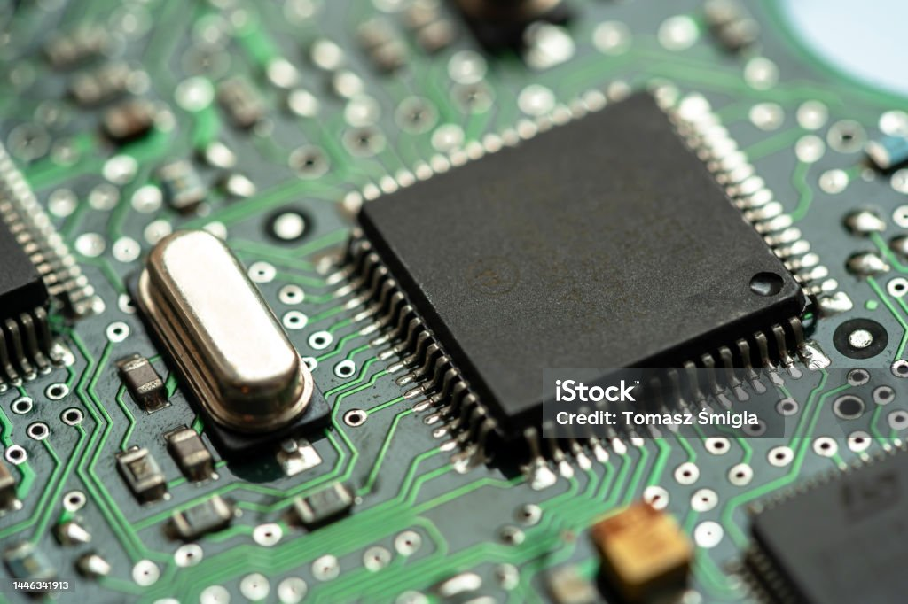
Inhoudstabel
Introductie
Hoofdstuk 1 – Wat is een microcontroller?
1.1 Wat is een microcontroller?
Een microcontroller is een kleine computer op een chip. Hij kan drie dingen:
- Meten (via ingangen of sensoren)
- Denken (programma uitvoeren)
- Sturen (via uitgangen, bijvoorbeeld een LED of motor aanzetten)
Voorbeelden:
- Raspberry Pi Pico
- Arduino Uno
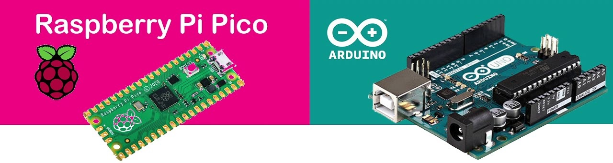
1.2 Verschil met een computer
Een laptop kan veel dingen tegelijk doen (internet, filmpjes, spelletjes). Een microcontroller doet meestal één taak, maar kan dat heel betrouwbaar en snel. Bijvoorbeeld: een wasmachine besturen, lampen automatisch schakelen of een robot laten bewegen.
1.3 Programmeren
Er zijn vele verschillende mogelijkheden om microtrollers te programmeren. Wij gaan ons beperken tot C++ en python.
Alle Arduino borden zijn te programmeren in C++. Sommige (de meer krachtige) kunnen ook in MicroPython geprogrammeerd worden. Dit is eigenlijk een light versie van python met enkele bibliotheken die speciaal bedoeld zijn voor microcontrollers. Doorheen de verdere cursus gaan we steeds zowel de code in C++ als MicroPython bespreken. Dit gebeurt in "code blokken" zoals hier:
// cpp
// Hier staat commentaar in C ++
# MicroPython
# Hier staat commentaar in python
1.4 Veilig werken met elektronica
Microcontrollers werken meestal op 3.3V of 5V. Spanningen tot en met 24V zijn veilig voor mensen.
Dit wil niet zeggen dat mensen veilig zijn voor microcontrollers. Het vermogen dat een microcontroller bord kan leveren is beperkt. Sluit nooit rechtstreeks een grote motor of lamp aan. Dit kan leiden tot te hoge stromen waardoor de microcontroller of het bord kapot kan gaan.
Zoals in het hoofdstuk over componenten al vermeld werd: altijd een weerstand in serie zetten met een LED, anders kan er iets kapot gaan.
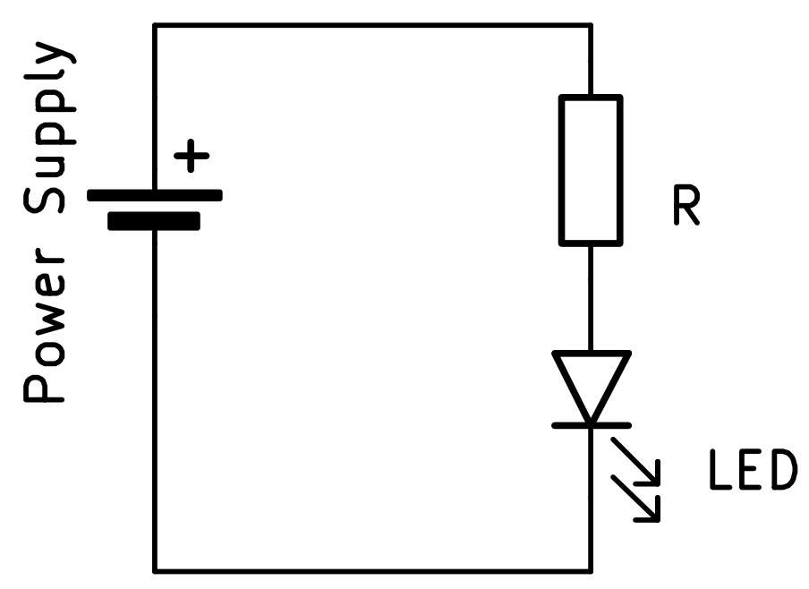
Elektronische componenten
Hier vind je uitleg over de belangrijkste basiscomponenten die we nodig hebben bij het gebruik van microcontrollers of om de werking te beschrijven.
DC Spanningsbron
Symbool:
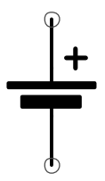
De spanningsbron is de voeding voor je microcontroller. Dit kan een batterij zijn, een adapter of de USB-poort van je computer.
Diode
Symbool:
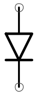
Een diode laat stroom maar in één richting door. Zoals het in dit symbool staat, kan de stroom van boven naar onder stromen maar niet omgekeerd.
LED (Light Emitting Diode)
Symbool:
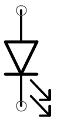
Een LED is een speciale diode, ze geeft licht als er voldoende stroom doorheen gaat. Gebruik altijd een serieweerstand om ervoor te zorgen dat er niet te veel stroom doorheen vloeit! Dan kan de LED of de uitgang van de microcontroller immers kapot gaan.
Weerstand
Symbool:
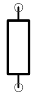
Een weerstand beperkt de stroom in een circuit. Dit hebben we bijvoorbeeld nodig bij het aansluiten van een LED!
Zekering (Fuse)
Symbool:
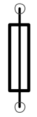
Een zekering beschermt tegen te hoge stroom. Wanneer de stroom te groot wordt, zal de zekering gecontroleerd doorbranden. Let op: een zekering is geen weerstand, vele leerlingen tekenen een weerstand met het symbool van een zekering maar dat is helemaal verkeerd!
Schakelaar (SPDT)
- Afbeelding:
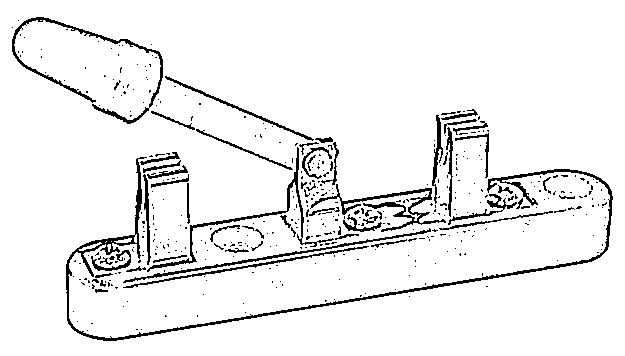
- Symbool:
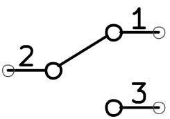
Met een SPDT (Single Pole Dual Throw) schakelaar of tuimelschakelaar, kan je kiezen hoe "middelste" contact verbonden wordt. In het model op de foto, kan je zorgen dat het met geen van beiden contact maakt maar dit kan meestal niet. Het is ofwel verbonden met het ene, ofwel met het andere en daar zit slechts een zeer korte "dode tijd" tussen. Deze schakelaar komt later terug bij output.
Microcontroller
Symbool:
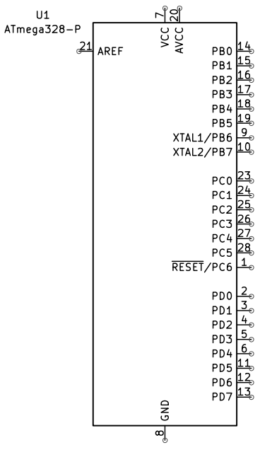
Dit is het symbool van de ATmega328-p. Deze microcontroller wordt ondermeer gebruikt op de Arduino UNO R3.
Zoals je ziet, is het symbool eerder simpel, een rechthoek met veel aansluitingen. Dit is vaak het geval bij complexere componenten. Je zal merken dat de grond (GND of 0V) vaak onderaan staat en de voedingsspanning (VCC) in de regel bovenaan. Ook zullen inputs vaak links staan en outputs rechts. Hier komen we later nog terug, wanneer we beter weten wat in- en outputs zijn. De signaalnamen staan in de rechthoek terwijl de pinnummers buiten de rechthoek, naast de pinnen genoteerd staan.
Microcontroller bord
Symbool:
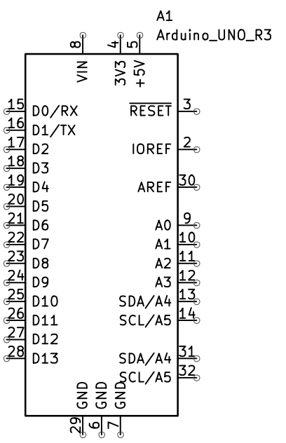
Dit is het symbool van het microcontroller bord Arduino UNO R3. Zoals je kan zien, lijkt het heel erg op een symbool van de microcontroller maar het is niet helemaal hetzelfde. Een microcontroller is een component terwijl er op een microcontroller bord meerdere componenten staan, waaronder de microcontroller zelf. Van deze extra componenten maken we abstractie (we tekenen ze niet). Enkel de pinnen waarmee we het bord verbinden, worden in het symbool getekend.
Schema's
We gebruiken deze symbolen om schema's te tekenen, zodat we duidelijk kunnen maken hoe de componenten aangesloten worden. Je vind heel veel informatie over microcontroller borden zoals de Arduino. Soms vind je een tekening zoals hieronder die duidelijk maken hoe een Arduino aan een ander bord of component aangesloten moet worden.
Tekening:

Deze tekening komt van een website (bron: instructables.com).
Er wordt getoond hoe een BMP280 module, die temperatuur en luchtdruk kan meten, via een breadbord aangesloten wordt aan een Arduino R3. Deze tekening geeft een beschrijving van de aansluitingen maar het is geen schema. De verschillende onderdelen worden grafisch voorgesteld en niet met symbolen. Dit werkt meestal goed om kleine, gemakkelijke schakelingen na te bouwen maar het werkt niet zo goed voor grotere of complexere circuits of om te begrijpen hoe de schakeling werkt. Als we hetzelfde circuit schematisch willen voorstellen, kan het er bijvoorbeeld zo uit zien:
Schema:

In tegenstelling met de tekening, zien we hier duidelijk dat SDA signaal van de microcontroller met SDI van de sensor verbonden wordt en het SCL signaal van de microcontroller met SCK van de sensor. Op dit moment weet je waarschijnlijk nog niet wat dat wil zeggen of waarom dat nuttig is maar wanneer je binnenkort meer weet over seriële communicatie, zal je het circuit veel beter begrijpen. Voorlopig moet je weten dat een tekening vooral bedoeld is om een circuit te kunnen nabouwen en een schema om het circuit te kunnen begrijpen en nabouwen.
Bit en Boolean – de kleinste eenheid
Wat is een bit?
Een bit is de kleinste eenheid van informatie in een computer.
Een bit kan maar 2 waarden hebben: alleen de waarde 0 of 1.
Deze 2 waarden kunnen, afhankelijk van de context, anders genoemd worden, zo kan een 0 ook uit, laag of onwaar genoemd worden en een 1 op zijn beurt aan, hoog of waar.
Wat is een variabele?
Een variabele is een naam voor een stukje geheugen in de computer waar je informatie in kunt opslaan.
Je kunt een variabele zien als een doosje met een label erop: je stopt er een waarde in, en je kunt die waarde later weer gebruiken of veranderen. Door het gebruik van variabelen, kunnen we krachtige en leesbare programma's maken.
Een variabele heeft altijd een naam en een datatype.
Met variabelen kun je informatie onthouden met de naam van de variabele als
label. Bijvoorbeeld:spanning = 230waarbij we naar de waarde 230 kunnen refereren als spanning.
Wat zijn datatypes?
Een datatype bepaalt welk soort informatie een variabele kan opslaan in een programma.
- Voor een bit (waar/onwaar) gebruik je het datatype boolean.
- Andere datatypes, die we later nog uitgebreid gaan bespreken, bestaan uit meerdere bits. Bijvoorbeeld:
- integer: een geheel getal of een getal zonder decimalen (meestal 8, 16 of 32 bits)
- float: een kommagetal of getal met decimalen
- string: een stukje tekst
Hoe meer bits een datatype heeft, hoe meer verschillende waarden je ermee kunt opslaan.
Een boolean kan maar twee waarden hebben (0 of 1), maar een unsigned integer (geheel getal zonder teken) van 8 bits kan bijvoorbeeld waarden van 0 tot 255 bevatten.
Het juiste datatype kiezen is belangrijk om je programma goed te laten werken!
Boolean in code
In programmeertalen gebruik je het datatype boolean om met waar/onwaar te werken.
In C++
In C++ moet je het datatype van een variabele altijd expliciet vermelden.
Bij een boolean betekent 0 hetzelfde als false en 1 hetzelfde als true.
// cpp
bool ledAan = true; // LED aan
bool knopIngedrukt = false; // Knop niet ingedrukt
In het bovenstaande voorbeeld, hebben we 2 variabelen gemaakt:
ledAanenknopIngedrukt. Ze zijn van het type bool (boolean) en hebben de respectievelijke waardetrueenfalse.
In MicroPython
In MicroPython hoef je het datatype van een variabele niet expliciet te vermelden. Python kiest zelf het type op basis van de waarde.
Toch is het heel belangrijk om zelf goed te weten welk type je gebruikt.
Ook hier geldt: 0 is False en 1 is True. Let op: in Python schrijf je True en False altijd met een hoofdletter!
# MicroPython
led_aan = True # LED aan
knop_ingedrukt = False # Knop niet ingedrukt
In het bovenstaande voorbeeld, hebben we 2 variabelen gemaakt:
led_aanenknop_ingedrukt. We kunnen enkel aan de waarde zien dat ze van het type boolean zijn: ze hebben namelijk de respectievelijke waardeTrueenFalse.
Waar kom je bits en booleans tegen?
- Bij het aansturen van uitgangen (LED aan/uit)
- Bij het uitlezen van ingangen (knop ingedrukt of niet)
- In logische beslissingen (if-statements)
Een boolean is dus een handige manier om met ja/nee-vragen in je programma te werken!
Boolean operatoren
Een operator is een symbool dat een bewerking uitvoert op één of meer waarden.
Bij booleans hebben we drie belangrijke operatoren: NOT, AND en OR.
NOT operator (omkeren)
De NOT operator keert een boolean waarde om:
NOT truewordtfalseNOT falsewordttrue
Gebruik: Om het tegenovergestelde van een conditie te krijgen.
Bijvoorbeeld: "Als de knop NIET ingedrukt is..."
AND operator (beide waar)
De AND operator geeft alleen true als beide waarden true zijn:
true AND true=truetrue AND false=falsefalse AND true=falsefalse AND false=false
Gebruik: Om te controleren of meerdere voorwaarden tegelijk waar zijn.
Bijvoorbeeld: "Als knop A ingedrukt is EN knop B ingedrukt is..."
OR operator (één van beide waar)
De OR operator geeft true als minstens één van de waarden true is:
true OR true=truetrue OR false=truefalse OR true=truefalse OR false=false
Gebruik: Om te controleren of één van meerdere voorwaarden waar is.
Bijvoorbeeld: "Als knop A ingedrukt is OF knop B ingedrukt is..."
Syntax in C++
bool knop1 = true;
bool knop2 = false;
// NOT operator (!)
bool nietKnop1 = !knop1; // false
// AND operator (&&)
bool beideKnoppen = knop1 && knop2; // false
// OR operator (||)
bool eenVanBeide = knop1 || knop2; // true
Syntax in MicroPython
knop1 = True
knop2 = False
# NOT operator (not)
niet_knop1 = not knop1 # False
# AND operator (and)
beide_knoppen = knop1 and knop2 # False
# OR operator (or)
een_van_beide = knop1 or knop2 # True
Extra: Naamgeving van variabelen
Probeer altijd een naam te kiezen die duidelijk maakt wat de variabele voorstelt.
Bij het kiezen van een variabelenaam is het handig om een duidelijke conventie te volgen.
Dit maakt je code beter leesbaar en begrijpelijk voor anderen (en jezelf!).
-
In C++ gebruiken programmeurs vaak de camelCase-notatie.
Hierbij begint de naam met een kleine letter en elk nieuw woord krijgt een hoofdletter. Bijvoorbeeld:ledAan,knopIngedrukt -
In MicroPython (en Python in het algemeen) wordt meestal de snake_case-notatie gebruikt.
Hierbij worden woorden gescheiden door een underscore (_), alles in kleine letters. Bijvoorbeeld:led_aan,knop_ingedrukt
Het is niet verplicht, maar het volgen van deze conventies maakt je code overzichtelijker! Het volgen van conventies maakt je code overzichtelijker en wordt vaak gewaardeerd door docenten en programmeurs.
Output – Dingen aansturen
Output betekent dat de microcontroller iets aanstuurt of laat gebeuren. Dit kan bijvoorbeeld een LED, een motor, een buzzer of een display zijn.
We kunnen dit voorstellen door te denken aan een SPDT-schakelaar in de microcontroller die het signaal verbindt met VCC (de voedingsspanning, meestal 5V of 3,3V) of met GND (grond, ‘ground’ of 0V).
Schema:
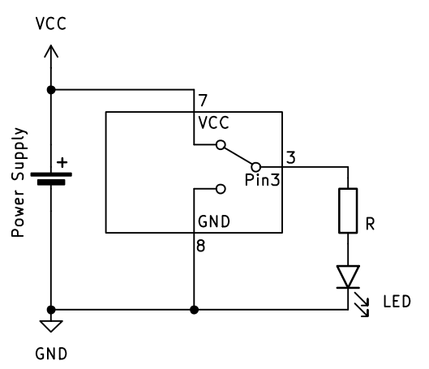
In het bovenstaande voorbeeld zien we dat pin 3 aangesloten is aan een LED met een serie weerstand. De microcontroller (of het microcontroller bord) is ook aangesloten aan een spanningsbron of voeding. De uitgang op pin 3 kan verbonden worden met ofwel VCC ofwel GND. Zoals in het schema te zien is, is de uitgang op dit moment verbonden met VCC, waardoor er stroom door de LED en serieweerstand loopt en de LED licht geeft.
We bekijken nu hoe we in C++, de taal die Arduino gebruikt, de uitgang met VCC verbinden om de LED te laten branden:
// cpp
digitalWrite(3, true); // Pin 3 hoog, LED aan
# MicroPython
led.value(True); # Uitgang hoog of LED aan
We kunnen ook de LED uit zetten, zoals aangegeven in dit schema:
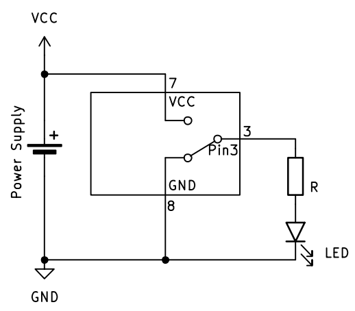
Er kan nu geen stroom van + naar - lopen. In de code doen we dit zo:
// cpp
digitalWrite(3, false); // Pin 3 laag, LED uit
# MicroPython
led.value(False); # Uitgang laag of LED uit
In het bovenstaande voorbeeld gaat de LED aan als de uitgang hoog staat en uit als de uitgang laag staat. Dit noemen we een actief hoog signaal.
Het is ook mogelijk om de LED (of iets anders zoals een motor, ... ) op een andere manier aan te sluiten zodat deze licht geeft (of actief is) wanneer de uitgang laag staat. Dit noemen we een actief laag signaal.
Schema:
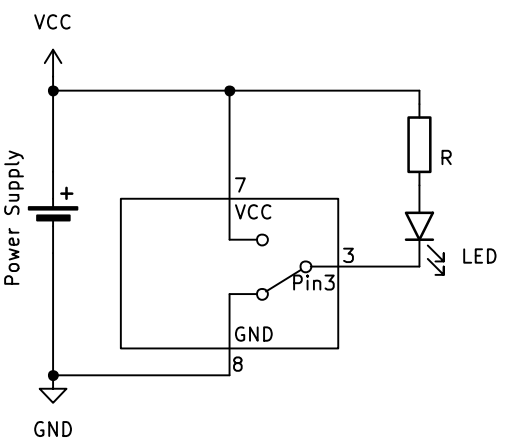
Dit schema en de werking zijn nagenoeg hetzelfde, maar de LED en de serieweerstand zijn aan VCC aangesloten in plaats van aan GND. Dit wil zeggen dat de LED nu zal licht geven wanneer de uitgang van de microcontroller met GND verbonden is en zal uit zijn wanneer hij met VCC verbonden is.
Nu moeten we in de code (C++ of MicroPython) de uitgang laag zetten om de LED te laten branden. Dit gebeurt met dezelfde code als hierboven om de uitgang laag te zetten:
// cpp
digitalWrite(3, false); // Pin 3 laag, LED aan
# MicroPython
led.value(False); # Uitgang laag of LED aan
Om de LED uit te zetten, moeten we in dit geval de uitgang hoog (true) zetten:
Schema:
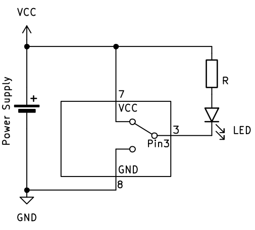
// cpp
digitalWrite(3, true); // Pin 3 hoog, LED uit
# MicroPython
led.value(True); # Uitgang hoog of LED uit
Een 1 of een 0, true of false, True of False hebben in beide schema's dus een andere uitwerking. Het is belangrijk om hiermee rekening te houden!
Let op!
Bij Arduino kun je HIGH en LOW gebruiken als waarde voor digitale pinnen, bijvoorbeeld bij digitalWrite. Let op: dit zijn allemaal hoofdletters en werken alleen in de Arduino-omgeving. Voor gewone booleans in C++ gebruik je true en false. In andere C++-omgevingen werken HIGH en LOW meestal niet. In code ziet het er dan zo uit:
// cpp
digitalWrite(3, HIGH); // Pin 3 hoog, LED uit
False of True ook 0 of 1 gebruiken:
# MicroPython
led.value(1); # Uitgang hoog of LED uit
Input – Dingen meten
Input betekent dat de microcontroller informatie ontvangt uit de buitenwereld. Dit kan bijvoorbeeld een knop, een sensor of een schakelaar zijn.
Het concept van digitale input
Stel je voor dat je een heel eenvoudige voltmeter hebt die maar twee waarden kan weergeven:
- True (waar) = er staat spanning op de ingang
- False (onwaar) = er staat geen spanning op de ingang
Deze voltmeter kan dus alleen maar ja of nee antwoorden op de vraag: "Is er spanning?"
Zo werkt digitale input ook: de microcontroller meet of er spanning staat op een pin en geeft als antwoord een boolean terug.
Voorbeelden van digitale input
-
Drukknop indrukken:
- Knop ingedrukt = True (spanning aanwezig)
- Knop niet ingedrukt = False (geen spanning)
-
Schakelaar:
- Schakelaar aan = True
- Schakelaar uit = False
-
Eenvoudige sensor:
- Object gedetecteerd = True
- Geen object = False
Schema-voorstelling
Net zoals bij output kunnen we dit voorstellen in een schema:
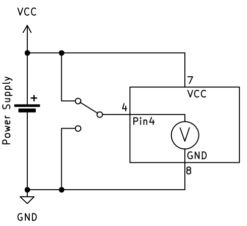
De microcontroller werkt als een digitale voltmeter: hij meet alleen of er wel of geen spanning staat, niet hoeveel spanning er precies is.
Input lezen in code
In C++ (Arduino)
In C++ lees je een digitale ingang uit met de functie digitalRead():
// cpp
bool knopStatus = digitalRead(4); // Lees pin 4 uit
Je krijgt dan HIGH (of true) terug als er spanning op de pin staat, of LOW (of false) als er geen spanning staat.
Opmerking, in het bovenstaande voorbeeld wordt er een variabele knopStatus aangemaakt om de waarde van digitalRead in op te vangen. Wanneer die variabele reeds bestaat in het programma, is het datatype
boolin het begin van de lijn niet meer nodig.
In MicroPython
In MicroPython ziet het er opnieuw net iets anders uit. Daar moeten we eerst aangeven dat knop aan pin 4 is aangesloten. Hoe dat moet, volgt later. Je leest een digitale ingang uit met de methode .value():
# MicroPython
knop_status = knop.value() # Lees de knop uit
Je krijgt dan 1 (of True) terug als er spanning op de pin staat, of 0 (of False) als er geen spanning staat.
Schmitt Trigger - waarom niet gewoon bij 2,5V omschakelen?
Je zou denken: "Waarom schakelt de microcontroller niet gewoon om bij 2,5V (de helft van 5V)?"
Het probleem is dat spanningen kunnen trillen of ruis kunnen hebben. Als de spanning heel langzaam stijgt of daalt rond 2,5V, zou de uitgang heel vaak kunnen omschakelen tussen 0 en 1.
Oplossing: De Schmitt Trigger
Een microcontroller gebruikt daarom een Schmitt Trigger. Dit betekent:
-
Bij stijgende spanning schakelt hij om van 0 naar 1 bij bijvoorbeeld 3,0V
-
Bij dalende spanning schakelt hij om van 1 naar 0 bij bijvoorbeeld 2,0V
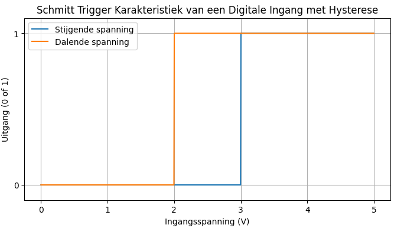
Deze verschillende drempelwaardes maken het systeem stabieler en voorkomen ongewenste schakelingen door ruis.
Dit heet hysterese (of hysteresis in het Engels) - een slim trucje om storing te voorkomen!
Drukknopschakelaars
In de bovenstaande uitleg sloten we een wisselschakelaar (of SPDT schakelaar) aan op de ingang van de microcontroller. Ondanks dat dit perfect werkt, gaan we dit in de praktijk niet veel zien. De meeste drukknopschakelaars hebben slechts 2 contacten en deze zijn open wanneer er niet op gedrukt wordt en gesloten wanneer er op gedrukt wordt. Om dit type schakelaar aan te sluiten, moeten we het circuit een beetje uitbreiden. Dit is dan ook de reden waarom we de uitleg van de input aanvankelijk met een ander type schakelaar hebben gedaan, zodat het circuit eenvoudiger en dus begrijpbaarder is.
Wanneer we de wisselschakelaar vervangen door een normaal-open (of SPST) schakelaar, ziet het schema er bijvoorbeeld zo uit:
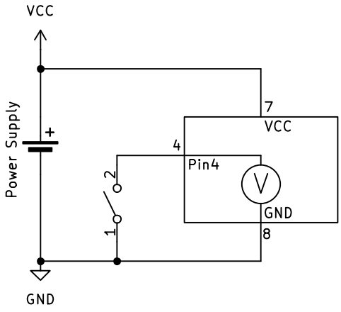
De schakeling zoals hierboven afgebeeld, zal niet werken; de interne voltmeter kan geen verschil detecteren tussen wanneer de schakelaar ingedrukt (gesloten) is en wanneer hij niet ingedrukt (open) is. Om het circuit wel te laten werken, voegen we een weerstand toe die de spanning "naar boven" trekt wanneer de schakelaar open is. Dit noemen we een pull-up weerstand.
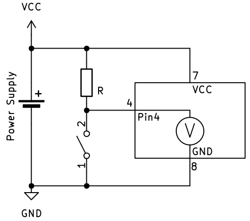
Let op: de spanning is hoog wanneer de drukknopschakelaar niet ingedrukt is en laag wanneer hij ingedrukt is. Dit is dan ook een actief laag signaal.
We kunnen de drukknopschakelaar en de weerstand omdraaien om er een actief hoog signaal van te maken:
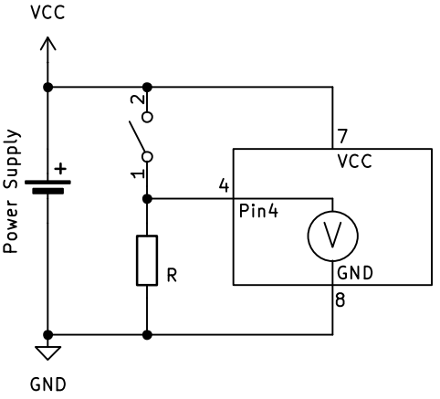
Weerstandswaarde
De waarde van de pull-up of pull-down weerstand is niet zo kritisch. Meestal wordt een weerstand met een waarde tussen 10kΩ en 100kΩ gebruikt. Wanneer de waarde lager dan 10kΩ is, loopt er meer stroom dan nodig door de weerstand wanneer de drukknopschakelaar ingedrukt wordt. Wanneer de waarde te hoog is, meer dan 100kΩ, is de spanningsverandering mogelijk te klein om opgemerkt te worden door de ingang.
Interne pull-up en pull-down
De meeste microcontrollers hebben de mogelijkheid om gebruik te maken van een interne pull-up weerstand. Dit wil zeggen dat de pull-up weerstand in de microcontroller zit en dat er geen externe weerstand toegevoegd moet worden. Het schema ziet er dan zo uit:
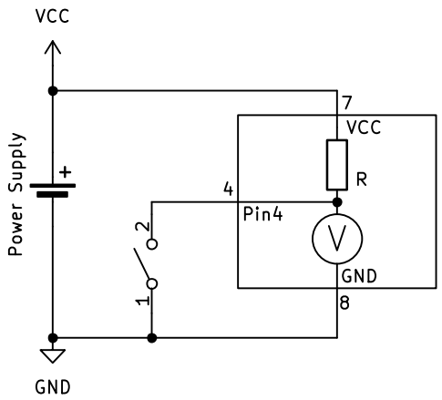
Uitwendig moet de drukknopschakelaar aangesloten worden tussen de ground en de input pin van de microcontroller.
Bij sommige microcontrollers is het ook mogelijk om een interne pull-down te gebruiken. Dat ziet er dan zo uit:
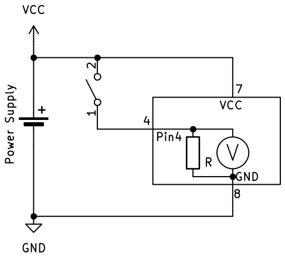
De drukknopschakelaar wordt nu aangesloten tussen de VCC en de input pin.
De Arduino Uno R3 beschikt niet over een interne pull-down weerstand!
Lees verder op de pagina 'GPIO' hoe je deze instellingen met een microcontroller doet.
GPIO – General Purpose Input/Output
GPIO staat voor General Purpose Input/Output. Dit zijn de pinnen op een microcontroller die je kunt instellen om ze te gebruiken als input (iets meten) of output (iets aansturen).
- GPIO als output: bijvoorbeeld een LED aan/uit zetten.
- GPIO als input: bijvoorbeeld een knop uitlezen.
GPIO is de brug tussen de concepten input/output en de echte hardware. We kunnen een vereenvoudigde GPIO schematisch zo voorstellen:
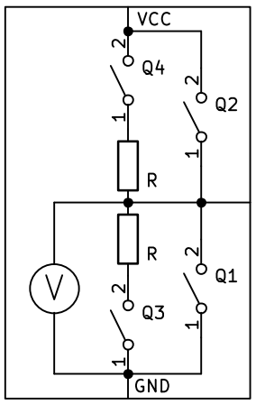
Dit is de standaard configuratie van een GPIO. Tenzij we de configuratie van een pin veranderen, is de GPIO zoals hierboven geconfigureerd. Alle "inwendige schakelaars" zijn open dus de GPIO gedraagt zich als een input.
GPIO in "input" mode
In C++ kunnen we de status van een ingang lezen door middel van het pin nummer (digitalRead(<pin_nummer>)). Als een bepaalde GPIO altijd als input gebruikt gaat worden, moet je dit dus niet specifiek instellen. Maar als tijdens je programma de GPIO in een andere mode gebruikt hebt en je wil hem terug als ingang instellen, kan dat op deze manier:
// cpp
pinMode(14, INPUT); // zet pin 14 in INPUT mode
In MicroPython gaat het een beetje anders. In het deel over de output en input, zagen we dat we moeten aangeven waarvoor een pin gebruikt wordt en dat je die dan pas kunt gebruiken. Hier gaan we eindelijk zien hoe dat moet gebeuren.
Een verschil tussen Arduino en MicroPython is dat bij Arduino de bibliotheken die nodig zijn om een GPIO te gebruiken, standaart toegangkelijk zijn. In MicroPython moet je de bibliotheek bovenaan je code aanroepen. Dat gebeurt zo:
# MicroPython
from machine import Pin
Als dit bovenaan in de code staat, kan je in je verdere code GPIO's configureren (is in de gewenste mode zetten) en gebruiken. Het configureren als input gaat dan zo:
# MicroPython
# Pin 14 als gewone input
button = Pin(14, Pin.IN)
Eigenlijk lijkt in MicroPython een GPIO op een object dat eigenschappen heeft. We gaan de details hiervan later nog bekijken maar het komt er voorlopig op neer dat je de GPIO een betekenisvolle naam geeft.
# MicroPython
# De input waarde inlezen
waarde = button.value()
GPIO in "input-pull-up" mode
We zetten onze vereenvoudigde GPIO in input-pull-up mode door schakelaar Q4 te sluiten:
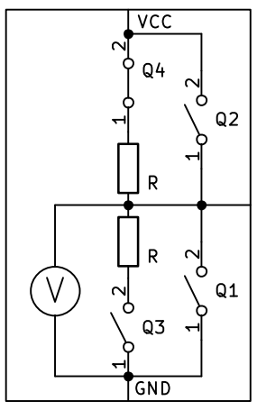
In C++ stellen we de GPIO opnieuw met pinMode in:
// cpp
pinMode(14, INPUT_PULLUP); // zet pin 14 in INPUT-PULLUP mode
Ook in MicroPython gebeurt het op een gelijkaardige manier, alleen komt er nu een argument (tussen de haakjes) bij. Het is alsof we zeggen dat de GPIO een input is en dat de pull-up weerstand moet aangezet worden.
# MicroPython
# Pin 14 als input met pull-up weerstand
button = Pin(14, Pin.IN, Pin.PULL_UP)
GPIO in "input-pull-down" mode
Niet alle microcontrollers hebben deze mogelijkheid. Bijvoorbeeld de veelgebruikte Arduino UNO r3 heeft geen interne pull-down weerstanden. Daarmee is deze optie niet beschikbaar. In de praktijk worden pull-up weerstanden veel vaker gebruikt dan pull-down weerstanden, dus het is vaak geen probleem. Voor de microcontrollers die het wel hebben, zoals de ESP-32, beschrijven we deze pull-down mode.
We zetten onze vereenvoudigde GPIO in input-pull-down mode door schakelaar Q3 te sluiten:
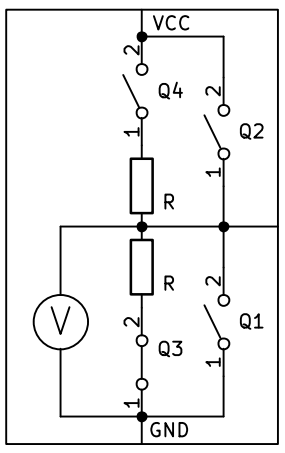
In C++ stellen we de GPIO opnieuw met pinMode in:
// cpp
pinMode(14, INPUT_PULLDOWN); // zet pin 14 in INPUT-PULLDOWN mode
Ook in MicroPython gebeurt het op een gelijkaardige manier als bij de pull-up mode.
# MicroPython
# Pin 14 als input met pull-down weerstand
button = Pin(14, Pin.IN, Pin.PULL_DOWN)
GPIO in "output" mode
Wanneer we de GPIO in output mode zetten, wordt de pin verbonden met GND of VCC. Hoe we dat doen, hadden we al in het hoofdstuk van de output gezien. Schematisch ziet het er eigenlijk wel iets anders uit dan met de "interne SPDT" schakelaar, al is de werking compleet hetzelfde. De 2 mogelijkheden in output mode zijn deze:
OUTPUT-mode, LAAG
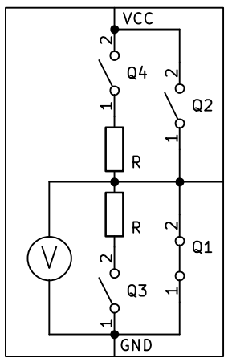
Dit wordt gedaan door alleen de inwendige schakelaar Q1 te sluiten. De GPIO pin wordt intern met GND verbonden.
OUTPUT-mode, HOOG
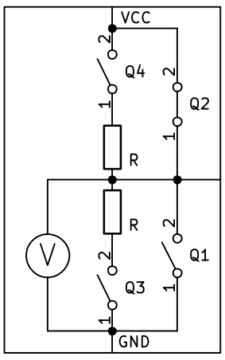
Dit wordt gedaan door alleen de inwendige schakelaar Q2 te sluiten. De GPIO pin wordt intern met VCC verbonden.
Een GPIO in C++ in output-mode te zetten, doen we zo:
// cpp
pinMode(12, OUTPUT); // zet pin 12 in OUTPUT mode
In MicroPython doen we het zo:
# MicroPython
from machine import Pin
# Pin 12 als output
led = Pin(12, Pin.OUT)
Samenvatting: GPIO configureren
C++ (Arduino)
| Mode | Instructie | Gebruik |
|---|---|---|
| Input | pinMode(pin, INPUT); |
Gewone ingang, externe pull-up/down nodig |
| Input Pull-up | pinMode(pin, INPUT_PULLUP); |
Ingang met interne pull-up weerstand |
| Input Pull-down | pinMode(pin, INPUT_PULLDOWN); |
Ingang met interne pull-down weerstand* |
| Output | pinMode(pin, OUTPUT); |
Uitgang (hoog/laag) |
*Niet beschikbaar op alle microcontrollers (bv. Arduino UNO r3)
Waarden lezen/schrijven:
// Lezen
bool waarde = digitalRead(pin);
// Schrijven
digitalWrite(pin, HIGH); // of LOW
MicroPython
| Mode | Instructie | Gebruik |
|---|---|---|
| Input | pin = Pin(nummer, Pin.IN) |
Gewone ingang, externe pull-up/down nodig |
| Input Pull-up | pin = Pin(nummer, Pin.IN, Pin.PULL_UP) |
Ingang met interne pull-up weerstand |
| Input Pull-down | pin = Pin(nummer, Pin.IN, Pin.PULL_DOWN) |
Ingang met interne pull-down weerstand |
| Output | pin = Pin(nummer, Pin.OUT) |
Uitgang (hoog/laag) |
Vergeet niet de bibliotheek te importeren:
from machine import Pin
Waarden lezen/schrijven:
# Lezen
waarde = pin.value()
# Schrijven
pin.value(1) # of 0, True, False
Meer datatypes
Van 1 bit naar 8 bits
We hebben al gezien dat 1 bit maar 2 waarden kan hebben: 0 of 1.
Maar wat als we meer verschillende waarden of grotere getallen willen opslaan? Dan combineren we meerdere bits!
Met 8 bits kun je 256 verschillende waarden maken
Stel je voor dat je 8 lampjes naast elkaar hebt. Elk lampje kan aan (1) of uit (0) zijn.
Door verschillende combinaties te maken, kun je 256 verschillende patronen creëren!
Voorbeelden:
00000000= 000000001= 100000010= 200000011= 311111111= 255
Met 8 bits kun je dus getallen van 0 tot 255 voorstellen!
| Bit 7 | Bit 6 | Bit 5 | Bit 4 | Bit 3 | Bit 2 | Bit 1 | Bit 0 |
|---|---|---|---|---|---|---|---|
| 2⁷ | 2⁶ | 2⁵ | 2⁴ | 2³ | 2² | 2¹ | 2⁰ |
| 128 | 64 | 32 | 16 | 8 | 4 | 2 | 1 |
Bijvoorbeeld: het getal 42 zou er zo uitzien:
42 = 32 + 8 + 2 = 00101010
Waarom is dit handig?
- Tellen: In plaats van alleen 0 en 1, kun je nu tot 255 tellen.
- Sensoren: Een temperatuursensor kan waarden van 0°C tot 255°C meten.
- Kleuren: Elk van de kleuren rood, groen en blauw gebruikt 8 bits (0-255).
Datatypes in C++ (Arduino)
In C++ moet je altijd aangeven welk datatype je gebruikt. Dit helpt de computer om te weten hoeveel geheugen hij moet reserveren.
unsigned char
Klein geheel getal zonder minteken (8 bits)
unsigned char helderheid = 255; // Kan waarden van 0 tot 255 bevatten
unsigned char percentage = 75; // Perfect voor percentages
Gebruik: Voor kleine getallen die precies in de 8-bit range passen:
- LED helderheid (0-255)
- Percentages (0-100)
- Sensor waarden die al geschaald zijn naar 0-255
- RGB kleurwaarden (rood, groen, blauw elk 0-255)
Zie je het verband? Dit gebruikt precies de 8 bits die we net hebben uitgelegd!
char
Karakter of klein getal
char letter = 'A'; // Voor letters
char kleinGetal = 42; // Voor getallen van -128 tot +127
Waarom heet dit datatype 'char'?
char is de afkorting van 'character' (karakter). Oorspronkelijk was dit datatype bedoeld om letters en tekens op te slaan.
Het geheim: Karakters worden eigenlijk opgeslagen als kleine gehele getallen! Elk karakter heeft een nummer in de ASCII-tabel:
- 'A' = 65
- 'B' = 66
- '0' = 48
- '1' = 49
Let op! Bij een karakter staat er in C++ steeds een enkele quote
'voor en na het karakter.
Voorbeelden:
char letter = 'A'; // Slaat eigenlijk het getal 65 op
char getal = 65; // Dit is hetzelfde als 'A'!
char cijfer = '5'; // Slaat het getal 53 op (niet het getal 5!)
Gebruik:
- Voor een letter of teken
- Voor heel kleine getallen (-128 tot +127) om geheugen te besparen
- Bij communicatie waar elke byte telt
Interessant: Je kunt rekenen met karakters! 'A' + 1 geeft 'B'.
unsigned int
Geheel groter getal zonder minteken
Hiervoor worden 16 bits gebruikt
unsigned int teller = 0; // Kan waarden van 0 tot 65535 bevatten
Gebruik: Voor getallen die nooit negatief worden, zoals:
- Aantal keer dat je op een knop drukt
- Sensor waarden (0-1023 van een potmeter)
- Tijd in milliseconden
(signed) int
Geheel getal met minteken
int temperatuur = -5; // Kan waarden van -32768 tot +32767 bevatten
Gebruik: Voor getallen die ook negatief kunnen zijn, zoals:
- Temperatuur (kan onder 0°C zijn)
- Positie (links/rechts van een startpunt)
- Verschil tussen twee metingen
float
Kommagetal (decimaal getal)
float temperatuur = 23.5; // Kan decimalen hebben
float spanning = 3.14159; // Pi met decimalen
Wat is een float?
Een float is een getal met een komma (eigenlijk punt in code). Het kan dus ook gebroken getallen voorstellen.
Voorbeelden:
- Temperatuur:
20.3°Cin plaats van alleen20°C - Spanning:
3.7Vin plaats van alleen3V - Afstand:
12.45 meter
Gebruik: Voor metingen die preciezer moeten zijn dan hele getallen:
- Temperatuursensoren (23.4°C)
- Spanningsmetingen (3.7V)
- Afstandsmetingen (15.6 cm)
- Berekeningen (gemiddelden, procenten)
Let op: Floats zijn minder nauwkeurig dan je denkt! Soms krijg je 3.9999999 in plaats van 4.0. Dit komt omdat ze binair opgeslagen worden.
Datatypes in MicroPython
In MicroPython hoef je het datatype niet expliciet te vermelden. Python kiest automatisch het juiste type op basis van de waarde die je opslaat.
Maar: Het is nog steeds belangrijk dat jij weet welk datatype je gebruikt!
Gehele getallen (integers)
teller = 0 # Python kiest automatisch 'int'
temperatuur = -5 # Ook een 'int', maar kan negatief zijn
Python is slim: Het maakt automatisch genoeg ruimte voor je getal, ook als het heel groot wordt!
Karakters en tekst (strings)
letter = 'A' # Eén karakter
tekst = "Hallo wereld" # Hele zin
Kommagetallen (floats)
temperatuur = 23.5 # Python herkent automatisch dat dit een float is
spanning = 3.14159 # Ook een float
Python is nog slimmer: Het herkent automatisch of je getal een integer (geheel getal) of float (kommagetal) is!
geheel_getal = 25 # Dit is een int
komma_getal = 25.0 # Dit is een float (let op de .0)
Samenvatting
C++ (Arduino)
- Je moet het datatype aangeven
- Beperkte ruimte per datatype
- Sneller en gebruikt minder geheugen
MicroPython
- Python kiest automatisch het datatype
- Onbeperkte ruimte (binnen grenzen van de microcontroller)
- Langzamer maar gemakkelijker te programmeren
Tip: Ook in Python is het handig om te weten welk type je gebruikt, vooral bij sensoren die bepaalde waardenbereiken hebben!
Je eerste volledige programma
Nu we de basisconcepten kennen (input, output, GPIO, datatypes), gaan we een volledig programma schrijven!
We leren hoe je je code moet structureren en hoe de microcontroller deze uitvoert.
De structuur van een programma
In C++ (Arduino)
Een Arduino-programma bestaat altijd uit twee hoofdfuncties:
void setup() {
// Deze code wordt EENMAAL uitgevoerd bij het opstarten
}
void loop() {
// Deze code wordt HERHAALDELIJK uitgevoerd (eindeloze lus)
}
setup() - Voorbereiding
- Wordt één keer uitgevoerd wanneer de Arduino opstart
- Hier configureer je de GPIO pinnen
- Hier start je seriële communicatie, die we later nog zullen zien
- Hier stel je startwaardes in
loop() - Hoofdprogramma
- Wordt oneindig herhaald
- Hier lees je bijvoorbeeld sensoren uit
- Hier neem je beslissingen
- Hier stuur je actuatoren (zoals motoren, LEDs, ...) aan
In MicroPython
In MicroPython schrijf je je programma van boven naar beneden:
from machine import Pin
# Configuratie (vergelijkbaar met Arduino's setup)
led = Pin(25, Pin.OUT)
button = Pin(14, Pin.IN, Pin.PULL_UP)
# Hoofdprogramma (vergelijkbaar met Arduino's loop)
while True:
# Deze code wordt oneindig herhaald
pass
Bovenaan - Voorbereiding
- Bibliotheken importeren
- GPIO pinnen configureren
- Variabelen initialiseren
while True: - Hoofdprogramma
- Oneindig herhalende lus (zoals Arduino's loop)
- Hier komt je hoofdcode
Voorbeeld 1: LED knipperen
C++ (Arduino)
// Configuratie
int ledPin = 13;
void setup() {
// Eenmalige voorbereiding
pinMode(ledPin, OUTPUT);
}
void loop() {
// Herhaal oneindig
digitalWrite(ledPin, HIGH); // LED aan
delay(1000); // Wacht 1 seconde
digitalWrite(ledPin, LOW); // LED uit
delay(1000); // Wacht 1 seconde
}
MicroPython
from machine import Pin
import time
# Configuratie
led = Pin(25, Pin.OUT)
# Hoofdprogramma
while True:
led.value(1) # LED aan
time.sleep(1) # Wacht 1 seconde
led.value(0) # LED uit
time.sleep(1) # Wacht 1 seconde
Voorbeeld 2: LED met knop besturen
C++ (Arduino)
// Pin configuratie
int ledPin = 13;
int buttonPin = 2;
void setup() {
// Configureer pinnen (eenmalig)
pinMode(ledPin, OUTPUT);
pinMode(buttonPin, INPUT_PULLUP);
}
void loop() {
// Lees knop uit
bool buttonPressed = !digitalRead(buttonPin); // Pull-up: signaal omdraaien
// Stuur LED aan
if (buttonPressed) {
digitalWrite(ledPin, HIGH); // LED aan
} else {
digitalWrite(ledPin, LOW); // LED uit
}
}
MicroPython
from machine import Pin
# Configuratie
led = Pin(25, Pin.OUT)
button = Pin(14, Pin.IN, Pin.PULL_UP)
# Hoofdprogramma
while True:
# Lees knop uit
button_pressed = not button.value() # Pull-up: False = ingedrukt
# Stuur LED aan
if button_pressed:
led.value(1) # LED aan
else:
led.value(0) # LED uit
Voorbeeld 3: Teller met knop
C++ (Arduino)
// Pin configuratie
int buttonPin = 2;
// Variabelen
unsigned int teller = 0;
bool vorigeKnopStatus = HIGH;
void setup() {
pinMode(buttonPin, INPUT_PULLUP);
Serial.begin(9600); // Start seriële communicatie
Serial.println("Teller gestart!");
}
void loop() {
// Lees huidige knopstatus
bool huidigeKnopStatus = digitalRead(buttonPin);
// Detecteer druk op knop (overgang van HIGH naar LOW)
if (vorigeKnopStatus == HIGH && huidigeKnopStatus == LOW) {
teller++; // Verhoog teller
Serial.print("Teller: ");
Serial.println(teller);
delay(50); // Korte pauze voor debouncing
}
// Onthoud status voor volgende loop
vorigeKnopStatus = huidigeKnopStatus;
}
MicroPython
from machine import Pin
import time
# Configuratie
button = Pin(14, Pin.IN, Pin.PULL_UP)
# Variabelen
teller = 0
vorige_knop_status = True
print("Teller gestart!")
# Hoofdprogramma
while True:
# Lees huidige knopstatus
huidige_knop_status = button.value()
# Detecteer druk op knop (overgang van True naar False)
if vorige_knop_status and not huidige_knop_status:
teller += 1 # Verhoog teller
print(f"Teller: {teller}")
time.sleep(0.05) # Korte pauze voor debouncing
# Onthoud status voor volgende loop
vorige_knop_status = huidige_knop_status
Belangrijke concepten
-
Variabelen buiten de lus
C++:
unsigned int teller = 0; // Buiten setup() en loop() void setup() { } void loop() { teller++; // Behoudt zijn waarde tussen loops }MicroPython:
teller = 0 # Boven de while-lus while True: teller += 1 # Behoudt zijn waarde tussen loops -
Debouncing
Knoppen kunnen "stuiteren" (bounce) bij het indrukken, waardoor meerdere signalen gedetecteerd worden.
Oplossingen:
-
Korte
delay()oftime.sleep()na detectie - Status alleen veranderen bij overgang (van HIGH naar LOW)
-
Hardware debouncing met condensator
-
Timing C++:
-
delay(milliseconden)- Blokkeert het programma -
millis()- Geeft tijd sinds opstart (niet-blokkerend)MicroPython:
-
time.sleep(seconden)- Blokkeert het programma time.ticks_ms()- Geeft tijd sinds opstart (niet-blokkerend)
Oefeningen
-
Knipperende LED met variabele snelheid
-
Maak een LED die knippert
- Gebruik een variabele voor de knippersnelheid
-
Verander de snelheid tijdens het programma
-
Twee knoppen, twee LED's
- Knop A bedient LED 1
- Knop B bedient LED 2
- Beide onafhankelijk van elkaar
Analoge signalen en PWM
ADC (Analog-to-Digital Converter)
Sommige pinnen kunnen een spanning meten (0–3.3 V).
// Arduino (C++) voorbeeld
int potPin = A0;
int waarde;
void setup() {
Serial.begin(9600);
}
void loop() {
waarde = analogRead(potPin); // 0–1023
Serial.println(waarde);
}
# MicroPython voorbeeld
from machine import ADC, Pin
pot = ADC(Pin(26))
waarde = pot.read_u16() # 0–65535
print(waarde)
PWM (Pulse Width Modulation)
LED dimmen door het signaal snel aan/uit te schakelen.
// Arduino (C++) voorbeeld
int ledPin = 9;
void setup() {
pinMode(ledPin, OUTPUT);
}
void loop() {
analogWrite(ledPin, 128); // halve helderheid
}
# MicroPython voorbeeld
from machine import PWM, Pin
led = PWM(Pin(25))
led.duty_u16(32768) # halve helderheid
Seriële communicatie
Seriële communicatie is een manier om gegevens bit voor bit te verzenden tussen twee apparaten. Het is eenvoudig, betrouwbaar en zit standaard op bijna elke microcontroller.
Inleiding: communiceren met pulsen
Stel je voor dat je geen letters kunt sturen, maar alleen een lampje dat aan of uit kan. Door dat lampje op het juiste moment te laten knipperen, kun je toch een boodschap doorgeven. Dat is in essentie binair: twee toestanden die veranderen in functie van de tijd.
Een bekend voorbeeld is morsecode. Daarin zijn er korte en lange signalen (punt en streep). Het beroemde SOS‑signaal is:
- S =
...(kort‑kort‑kort) - O =
---(lang‑lang‑lang) - S =
...(kort‑kort‑kort)
Zo kun je met alleen aan/uit toch betekenis overbrengen. Dat idee is de basis van digitale communicatie.

Van morse naar ASCII
Morse is handig voor mensen, maar computers gebruiken liever vaste afspraken: elke letter krijgt een getal. Die afspraak heet ASCII (American Standard Code for Information Interchange).
Voorbeelden:
A= 65B= 66a= 970= 48
In een ASCII‑tabel staat precies welk getal bij welk teken hoort. Zo kan een computer een letter sturen als een getal, en dat getal wordt door de ontvanger weer omgezet naar hetzelfde teken.
Vanaf hier kijken we hoe microcontrollers die getallen echt verzenden, bit voor bit, via seriële communicatie.
UART-signaal en baudrate
Bij UART worden de bits achter elkaar verstuurd als spanningsniveaus in de tijd. Daarom is het belangrijk dat zender en ontvanger dezelfde snelheid gebruiken.
- Baudrate = de snelheid van communiceren (bits per seconde)
- Beide apparaten moeten dezelfde baudrate ingesteld hebben
Als de snelheden niet overeenkomen, wordt elke bit op het verkeerde moment gelezen. Dat is een veelvoorkomende reden waarom seriële communicatie niet werkt.

Leerdoelen
- Begrijpen wat UART/serial is
- Weten wat baudrate, databits, pariteit en stopbits betekenen
- Een basisverbinding kunnen maken tussen microcontroller en PC of tussen twee microcontrollers
Hoe werkt het?
Bij UART (Universal Asynchronous Receiver/Transmitter) sturen apparaten data asynchroon: er is geen aparte kloklijn nodig. In plaats daarvan spreken beide kanten dezelfde baudrate af (bijv. 9600, 115200). Elke byte krijgt een startbit, databits, een optionele pariteitsbit en een stopbit.
Belangrijkste begrippen
- Baudrate: snelheid in bits per seconde.
- Databits: meestal 8 bits per byte.
- Pariteit: extra foutcontrole (vaak
None). - Stopbits: meestal 1.
Bekabeling
Een basisverbinding (TTL‑niveau) heeft minimaal:
- TX → RX (kruisen!)
- RX → TX
- GND ↔ GND
Let op: seriële pinnen werken op logische niveaus (bijv. 5V of 3.3V). Gebruik een level shifter als de spanningen verschillen.
Voorbeeld (Arduino)
void setup() {
Serial.begin(9600);
}
void loop() {
Serial.println("Hallo via serial!");
delay(1000);
}
Voorbeeld (MicroPython)
from machine import UART
import time
uart = UART(0, 9600)
while True:
uart.write("Hallo via serial!\n")
time.sleep(1)
Toepassingen
- Debuggen via de seriële monitor
- Data loggen naar een PC
- Communicatie tussen meerdere microcontrollers
Oefening
- Stuur om de seconde een tellerwaarde via de seriële poort.
- Laat de ontvanger de waarde terugsturen (echo) en toon dit op de seriële monitor.
Samenspel en toepassingen
Simpel project met LEDs en drukknoppen
Arduino UNO
Arduino project met drukknoppen en LED's
Raspberry Pi Pico
MicroPython project met drukknoppen en LED's
Input + Output combineren
Dimmen van een LED met een potmeter, of een knop die de toonhoogte van een buzzer verandert.
Mini verkeerslicht
// Arduino (C++) voorbeeld
int ledR = 10, ledG = 11, ledY = 12, button = 2;
void setup() {
pinMode(ledR, OUTPUT);
pinMode(ledG, OUTPUT);
pinMode(ledY, OUTPUT);
pinMode(button, INPUT);
}
void loop() {
if (digitalRead(button) == HIGH) {
digitalWrite(ledR, HIGH);
delay(1000);
digitalWrite(ledR, LOW);
digitalWrite(ledG, HIGH);
delay(1000);
digitalWrite(ledG, LOW);
digitalWrite(ledY, HIGH);
delay(500);
digitalWrite(ledY, LOW);
}
}
# MicroPython voorbeeld
from machine import Pin
import time
ledR = Pin(15, Pin.OUT)
ledG = Pin(14, Pin.OUT)
ledY = Pin(13, Pin.OUT)
button = Pin(12, Pin.IN)
while True:
if button.value():
ledR.value(1)
time.sleep(1)
ledR.value(0)
ledG.value(1)
time.sleep(1)
ledG.value(0)
ledY.value(1)
time.sleep(0.5)
ledY.value(0)
Projectideeën: - Reaction game met knop en LED - Toonhoogte veranderen met knop en buzzer
Vooruitblik
Andere datatypes
- float (kommagetallen)
- string (tekst)
Serial communicatie
Met de computer praten via de seriële poort.
// Arduino (C++) voorbeeld
Serial.println("Hallo!");
# MicroPython voorbeeld
print("Hallo!")
Later kun je uitbreiden met vb sensoren, displays en motoren!